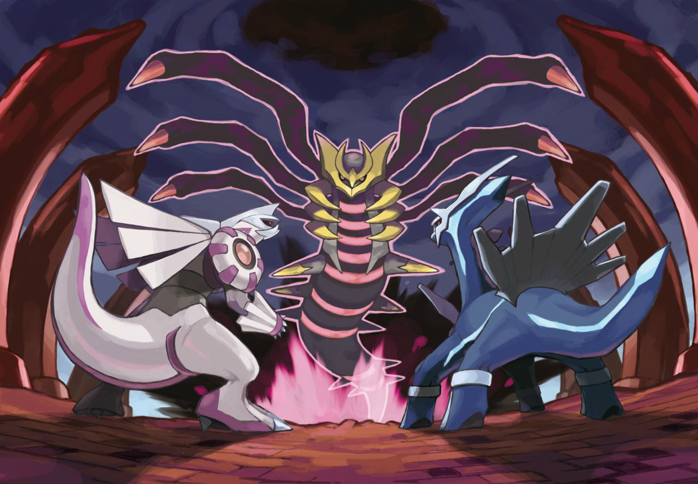
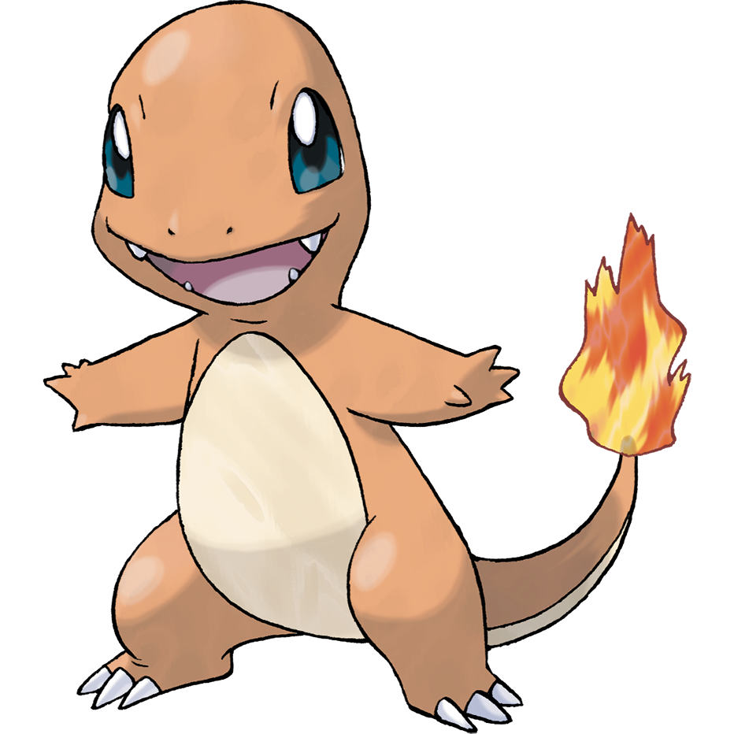
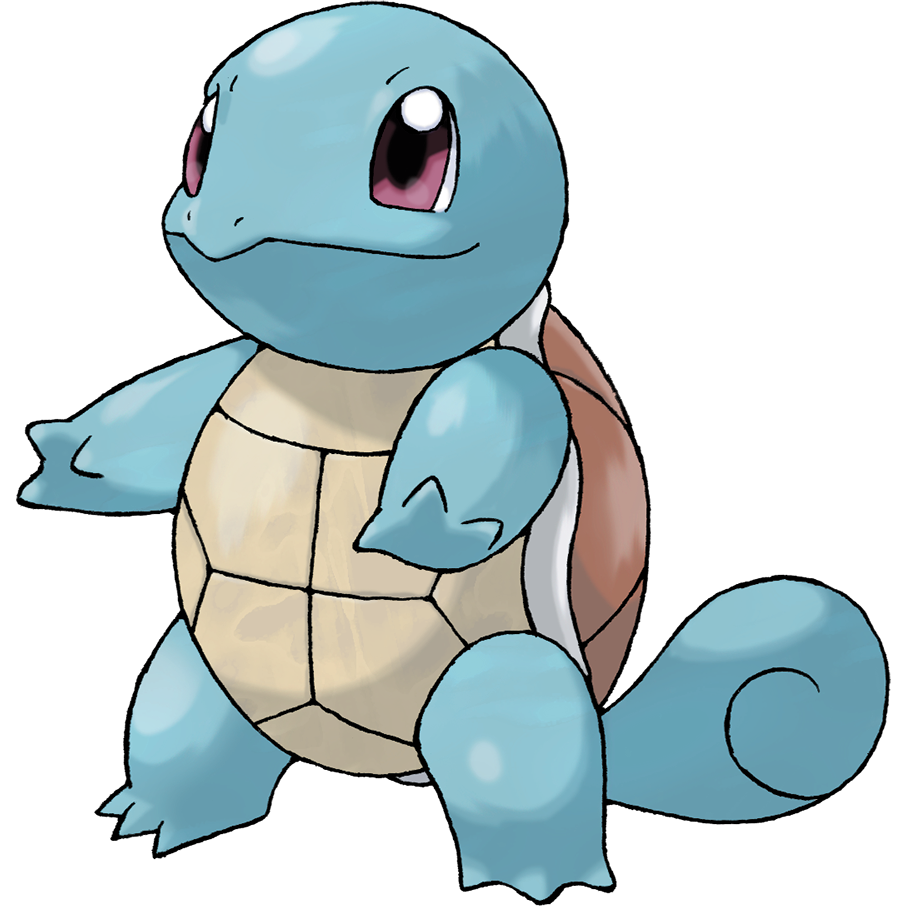

Pokemon adalah makhluk fiksi pada seri pokemon. Saat ini ada 923
spesies yang diketahui menghuni dunia Pokémon; namun, tersirat bahwa
ada lebih banyak lagi yang menunggu untuk ditemukan. Pokemon
memiliki kekuatan fantastis yang tidak ditunjukkan oleh kebanyakan
hewan nyata, seperti manipulasi elemen/aspek kehidupan, seperti
listrik atau api. Pokémon ditampilkan sebagai pengganti hewan di
dunia mereka.
Asal Usul Pokemon

Dikatakan dalam banyak legenda Sinnoh bahwa alam semesta, termasuk
dunia Pokémon, diciptakan oleh satu Pokémon, Arceus. Dalam
kekosongan kehampaan, satu Telur muncul, yang kemudian menetas
menjadi Arceus. Arceus menciptakan Dialga, Palkia, dan Giratina dan
memberikan Dialga dan Palkia kemampuan untuk mengontrol ruang dan
waktu. Giratina dibuang ke dimensi lain karena perilakunya.
Kemudian, selama awal pembentukan dunia, mungkin lebih cepat, Arceus
menciptakan Azelf, Uxie, dan Mesprit untuk menciptakan kemauan,
pengetahuan, dan emosi, masing-masing, atribut yang ada di semua
manusia modern dan Pokémon.
Setelah pembentukan wilayah Sinnoh, mereka menyelam ke dasar Danau
Valor, Danau Acuity, dan Danau Verity saat ini, masing-masing,
menjuluki istilah "penjaga danau." Juga di masa-masa awal ini, Mew
muncul di planet ini, berisi DNA setiap Pokémon. Ada banyak ilmuwan
yang percaya bahwa Mew adalah nenek moyang dari semua Pokémon.
Pilih Pokemon-mu
Charmander

Charmander adalah Pokémon reptil bipedal dengan tubuh oranye dan
mata biru. Bagian bawahnya dari dada ke bawah dan telapak kakinya
berwarna krem. Ia memiliki dua taring kecil yang terlihat di
rahang atasnya dan dua taring yang lebih kecil di rahang bawahnya.
Api menyala di ujung ekor ramping Pokémon ini dan telah berkobar
di sana sejak kelahiran Charmander. Nyala api dapat digunakan
sebagai indikasi kesehatan dan suasana hati Charmander, menyala
terang saat Pokemon kuat, lemah saat kelelahan, goyah saat
bahagia, dan menyala saat marah. Dikatakan bahwa Charmander mati
jika nyala apinya padam. Namun, jika Pokemon sehat, nyala api akan
terus menyala meskipun agak basah dan dikatakan mengepul saat
hujan.
Squirtle

Squirtle adalah Pokémon reptil kecil yang menyerupai kura-kura
biru muda. Meskipun biasanya berjalan dengan dua kaki pendek, ia
juga dapat berjalan dengan empat kaki. Brawl. Ia memiliki mata
besar, keunguan atau kemerahan dan bibir atas yang sedikit
bengkok. Masing-masing tangan dan kakinya memiliki tiga jari
runcing. Ujung ekornya yang panjang melengkung ke dalam. Tubuhnya
terbungkus oleh cangkang keras yang terbentuk dan mengeras setelah
lahir. Cangkang ini berwarna coklat di bagian atas, kuning pucat
di bagian bawah, dan memiliki tonjolan putih tebal di antara kedua
bagiannya.
Bulbasaur
Bulbasaur adalah Pokémon amfibi berkaki empat kecil yang memiliki
kulit biru-hijau dengan bercak lebih gelap. Ia memiliki mata merah
dengan pupil putih, runcing, struktur seperti telinga di atas
kepalanya, dan moncong pendek dan tumpul dengan mulut lebar.
Sepasang gigi kecil runcing terlihat di rahang atas saat mulutnya
terbuka. Masing-masing kakinya yang tebal berakhir dengan tiga
cakar yang tajam. Di punggung Bulbasaur ada bohlam tanaman hijau,
yang tumbuh dari biji yang ditanam di sana saat lahir. Bulbasaur
juga menyembunyikan dua tanaman merambat ramping seperti tentakel
dan memberinya energi melalui fotosintesis serta dari biji kaya
nutrisi yang terkandung di dalamnya.